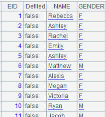
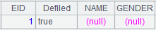

Description:
Split each record of a pseudo table and concatenate the splitting results.
Sytnax:
T.conj(��)
Note:
The function splits each record of pseudo table T into a table sequence or a record sequence according to expression ��, concatenates members or records of the splitting result set, and returns a new pseudo table.
Parameter:
|
T |
A pseudo table |
|
�� |
An expression that returns a record sequence or a table sequence |
Return value:
Pseudo table
Example:
|
|
A |
|
|
1 |
=create(file).record(["gymn.ctx"]) |
Below is content of composite table gymn.ctx:  |
|
2 |
=pseudo(A1) |
Return a pseudo table object |
|
3 |
=A2.conj(create(ID,NAME,COUNTRY,SUBJECT,SCORES).record([ID,NAME,COUNTRY ,"VAULT",VAULT,ID,NAME,COUNTRY,"UNEVENBARS",UNEVENBARS ,ID,NAME,COUNTRY,"BALANCEBEAM",BALANCEBEAM,ID,NAME,COUNTRY,"FLOOR",FLOOR])) |
Split each record of the pseudo table and concatenate the splitting results |
|
4 |
=A3.import() |
Below is content of the pseudo table returned by A3:  |